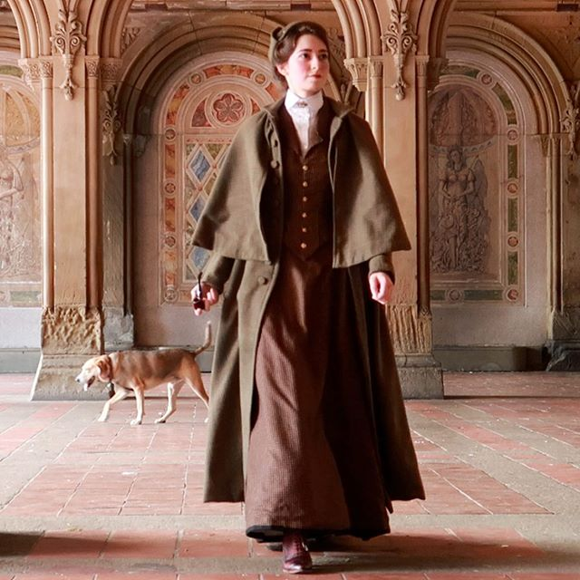
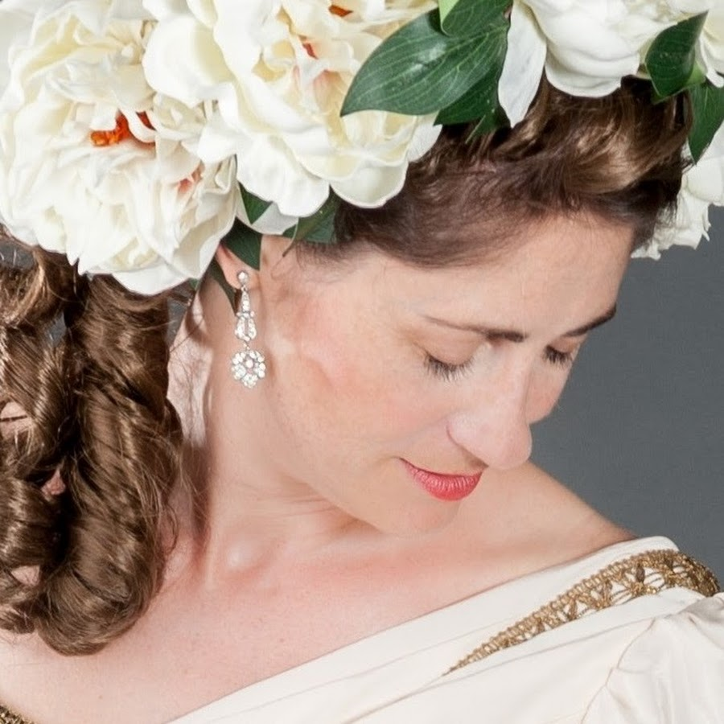
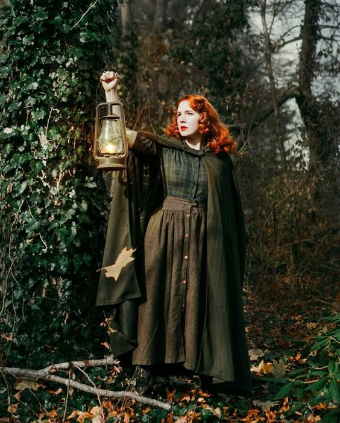
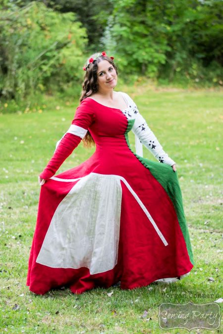

I find it important to give credit to people that both inspire me, as well as the people I get my information from.
Here you will find links to these people as well as a little bit about the content they create.
Bernadette Banner

She studies history of dress, through reconstruction by hand (and with authentic machinery, where appropriate)
She is the one who originally inspired me to sew, so I think it fitting she's the first on this list
She works mostly on 10th century until pre world war 1 clothing
She has a youtube channel
And a website
And here's her instagram
Cathy Hay

Cathy Hay is another youtuber I adore, she has a weakness for very old clothes
Such as her ambitious project of restoring the Peacock dress (you can follow this project on her youtube channel)
She also has a lot of videos about mental health, and the proper mentality for sewing without getting a burnout.
Here's the link to her youtube channel.
Her blog
And her instagram
Rachel Maksey

This is another one of my favorites, Rachel focuses a lot on the 20th century.
She is also a cosplayer and does a bit more "fandom" related things, not exclusively historical dress.
One of my favorite series of her is "but make it vintage" Where she turns original costumes into vintage styles.
This is her Youtube channel
And this is her instagram
Morgan Donner

This costume historian focuses more on the earlier centuries, not neccesarily on the ones I'm talking about today.
She works with a lot of medieval things, but she doesn't exclusivley sew by hand.
One of the other things she does a lot is trying to bring historical fashion into the modern wardrobe.
This is her Youtube channel
Her website
And finally, her instagram